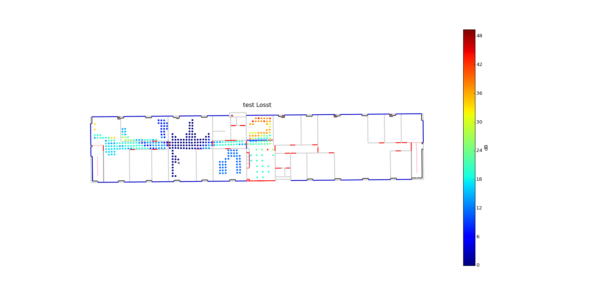

pylayers.antprop.loss.Losst¶
-
pylayers.antprop.loss.Losst(L, fGHz, p1, p2, dB=True)[source]¶ calculate Losses between links p1 p2
Parameters: L : Layout object
fGHz : np.array
frequency GHz
p1 : source points
(2 x Np1) array or (2,) array
p2 : observation point
(2 x Np2) array or (2,) array
dB : boolean
See also
pylayers.antprop.coverage,pylayers.slab.Interface.losstExamples
>>> import matplotlib.pyplot as plt >>> from pylayers.simul.simulem import * >>> from pylayers.measures.mesuwb import * >>> from pylayers.antprop.loss import * >>> S = Simul() >>> S.layout('WHERE1.ini') >>> fGHz = 4 >>> Tx,Rx = ptw1() >>> Lwo,Lwp,Edo,Edp = Losst(S.L,fGHz,Tx.T,Rx[1,0:2],dB=True) >>> fig=plt.figure(figsize=(20,10)) >>> fig,ax = S.L.showGs(fig=fig) >>> tit = plt.title('test Losst') >>> sc2 = ax.scatter(Rx[1,0],Rx[1,1],s=20,marker='x',c='k') >>> sc1 = ax.scatter(Tx[:,0],Tx[:,1],s=20,c=Lwo,linewidth=0) >>> cb = plt.colorbar(sc1) >>> cb.set_label('dB') >>> plt.show()(Source code, png, hires.png, pdf)

{kind=link}
{kind=link}